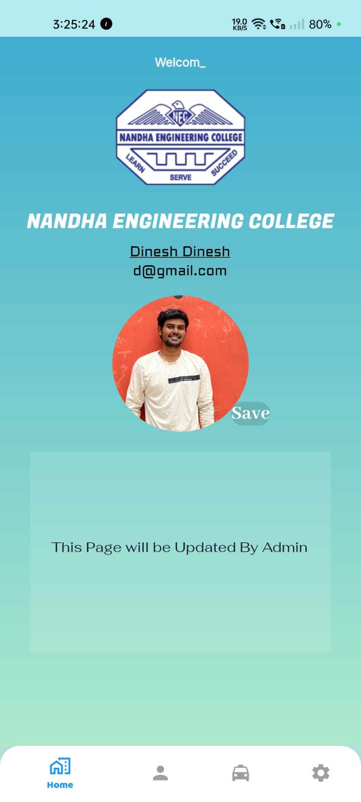
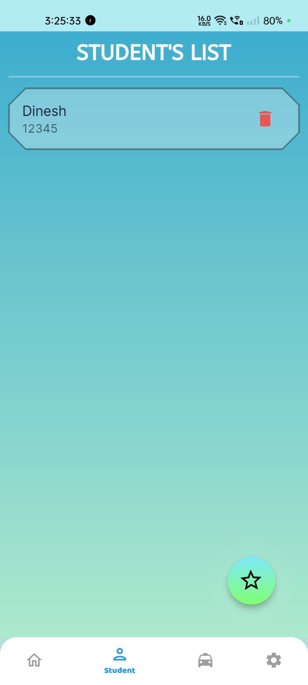
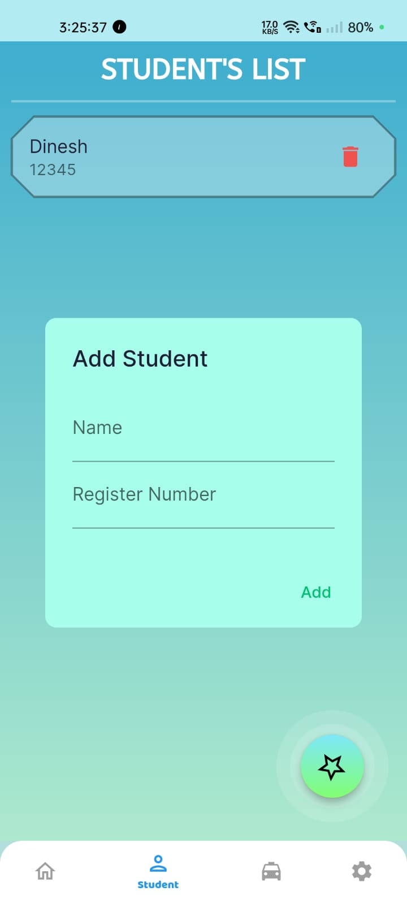
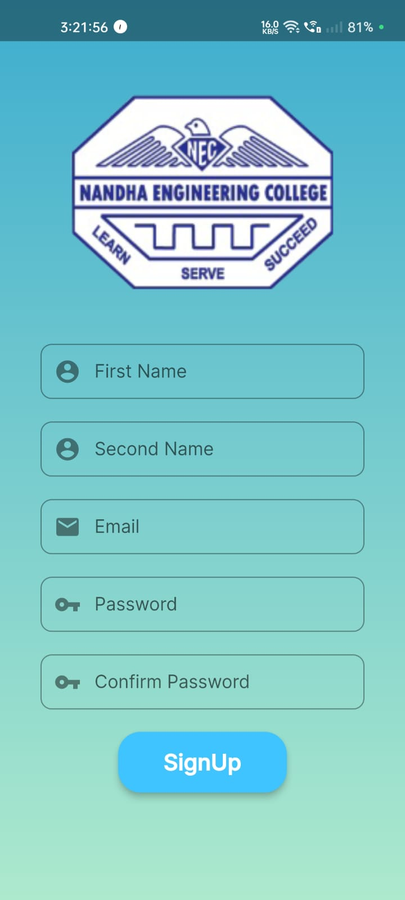
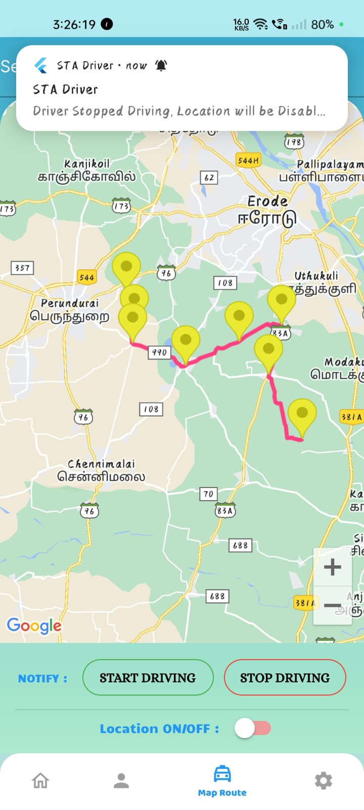
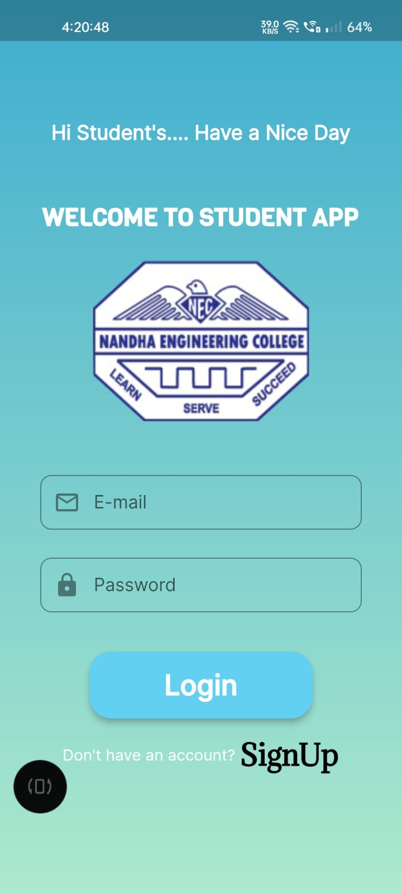
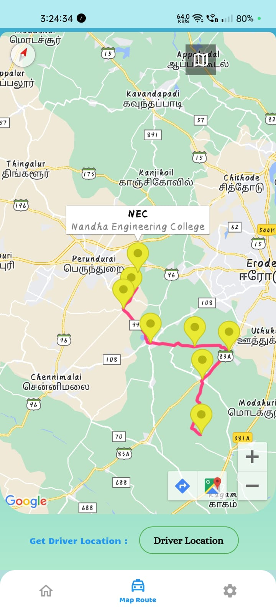
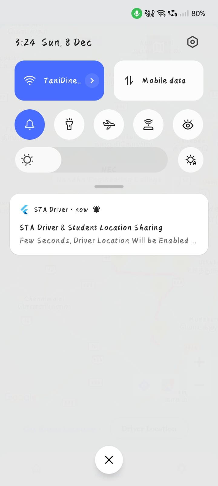
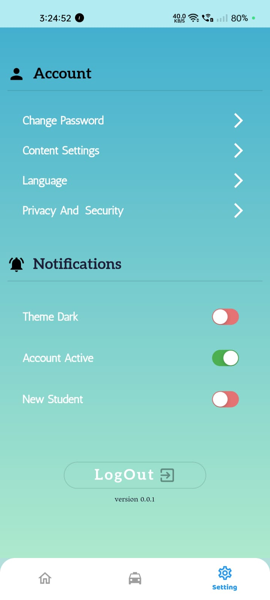
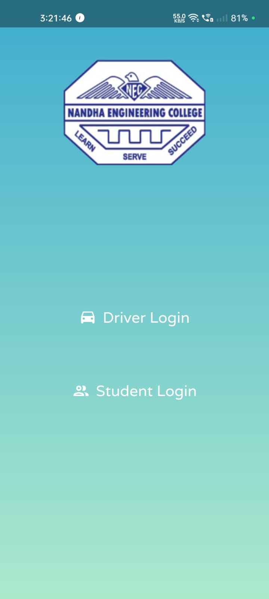

Smart Travellers App
An accessible travel guidance system for public transport networks, focused on simplifying route use and improving rider confidence.
Role
Research & Development
Platform
Flutter, Dart, Web
Outcome
Published paper and tested simulation experience.
Overview
This project explores public transportation navigation, mobile guidance, and travel planning to reduce congestion and improve sustainability.
- Improved traveler satisfaction by providing on-trip navigation information.
- Designed a modular, cost-efficient user-friendly system for transport networks.
- Supported route discovery and environmental benefits through better transit use.
Simulation Screens
The app opens with a welcoming navigation dashboard for travelers.

Drivers can log in to manage routes, students, and live tracking.

Driver dashboard showing active trips and vehicle status.

List view for managing students assigned to a route.

Manual passenger lists and attendance controls.

Driver registration and profile setup screens.

Controls to start and stop trip tracking.
Trip completion and summary screens.

Students sign in to get personalized trip information.

Students see live bus location and trip details.

Map view showing vehicle location relative to stops.

In-app notifications for schedule changes and alerts.

Profile and application settings page.

Primary application screen used across roles.
